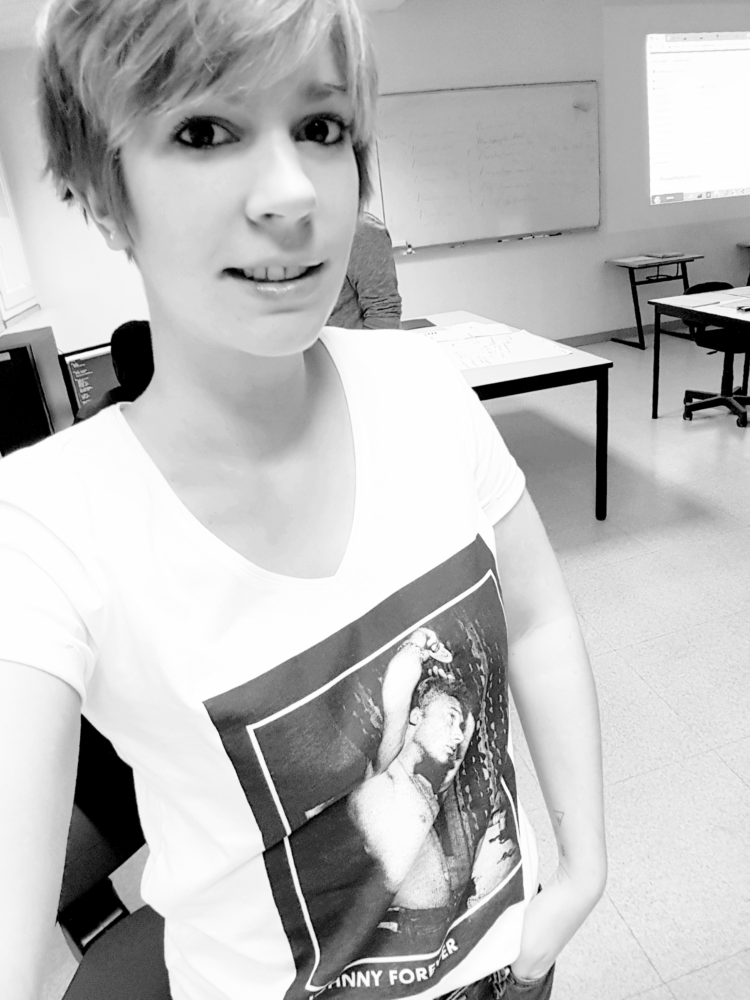

Qui sommes nous !
Nous sommes 8 apprentis développeurs web, web mobile, actuellement en formation au centre AFPA d'Angers, sous la direction d'un jeune et talentueux développeur full stack.
Tous, en pleine reconversion professionnelle, issus de corps de métier très différents les uns des autres, mais ayant la même passion du web, souhaitions, au travers de ce site web, montrer nos compétences, tout en rendant hommage à un géant de la musique.
L'EQUIPE !
CARREAU Quentin
Age: 25 ans
Développeur full stack.
Responsable du projet "fan de johnny". Il nous supervise et nous apporte son aide en cas de besoin.
L'EQUIPE !

PLARD Madeline
Age: 28 ans
Apprenti développeur
Ancienne journaliste chez "OUEST FRANCE".
Responsable de l'aperçu vidéos et images sur le site "Fan de Johnny".
L'EQUIPE !

CAMARA Mamadou Saliou
Age: 34 ans
Apprenti développeur
Ancien conseiller client chez "CONCENTRIX".
Responsable de la page et de l'intégration des images sur le site "Fan de Johnny".
L'EQUIPE !
MARTINEL GILLES
Age: 30 ans
Apprenti développeur
Ancien chauffeur poids lourd.
Responsable de la page et de l'intégration des vidéos sur le site "Fan de Johnny".
L'EQUIPE !

MONNET Kevin
Age: 24 ans
Apprenti développeur
Ancien gendarme départemental.
Responsable de la page "Contact" sur le site "Fan de Johnny".
L'EQUIPE !
BOLO Jérémy
Age: 24 ans
Apprenti développeur
Ancien mécanicien automobile.
Responsable de la page "Paroles" sur le site "Fan de Johnny".
L'EQUIPE !
DOS SANTOS DAMIAO Jonathan
Age: 27 ans
Apprenti développeur
Ancien professeur d' histoire et géographie au collège de "Sainte Luce".
Responsable de la page "Connexion, Inscription et Mon Compte" sur le site "Fan de Johnny".
L'EQUIPE !
LELIAS Justin
Age: 28 ans
Apprenti développeur
Ancien responsable de magasin à "Jardinerie AUBIN LELIAS"
Responsable de la page "Accueil" sur le site "Fan de Johnnny".
L'EQUIPE !
TOURNIER Yoann
Age: 31 ans
Apprenti développeur
Ancien militaire au "6° Régiment du Génie" d'AngersResponsable de cette page sur le site "Fan de Johnny"
❮
❯